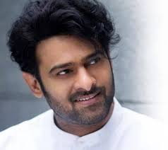
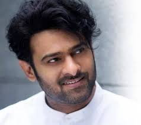

Uppalapati Venkata Suryanarayana Prabhas Raju ([pɾabʱaːs] born 23 October 1979), known mononymously as Prabhas, is an Indian actor who predominantly works in Telugu cinema.[4] He is one of the highest-paid actors in Indian cinema and has been featured in Forbes India's Celebrity 100 list since 2015.[5][6][7][8] Referred to in the media as the "Rebel Star", he has appeared in over 20 films, and has received seven Filmfare Awards nominations, a Nandi Award, and a SIIMA Award.
 
